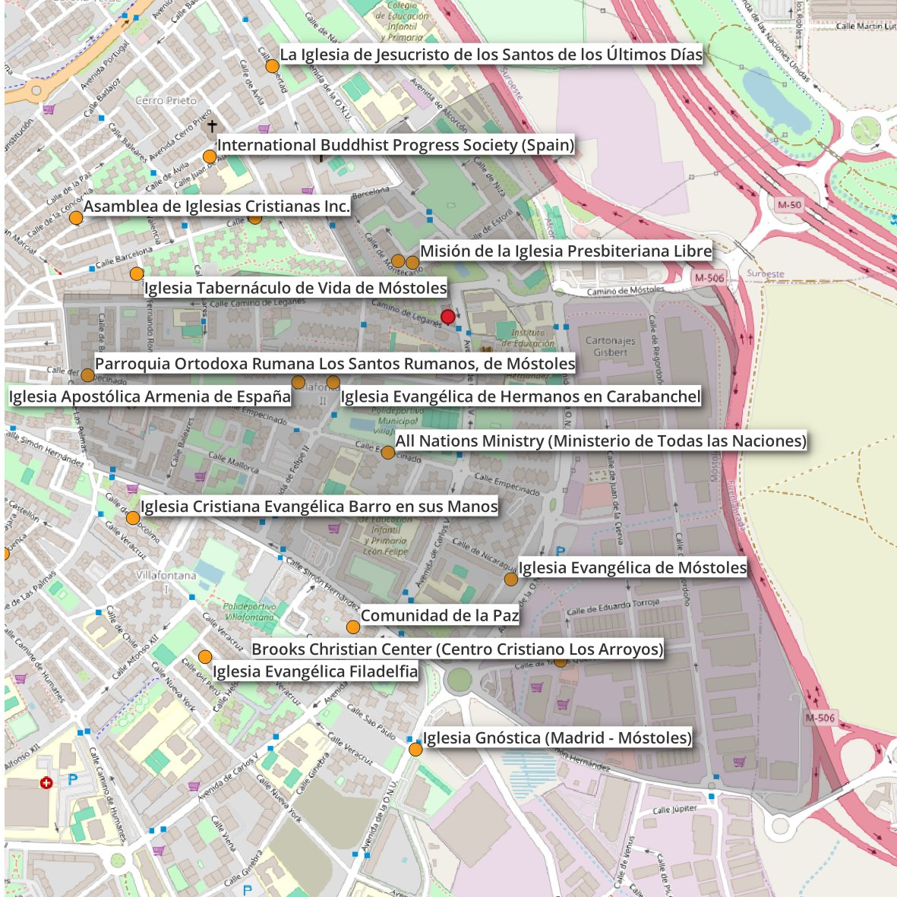
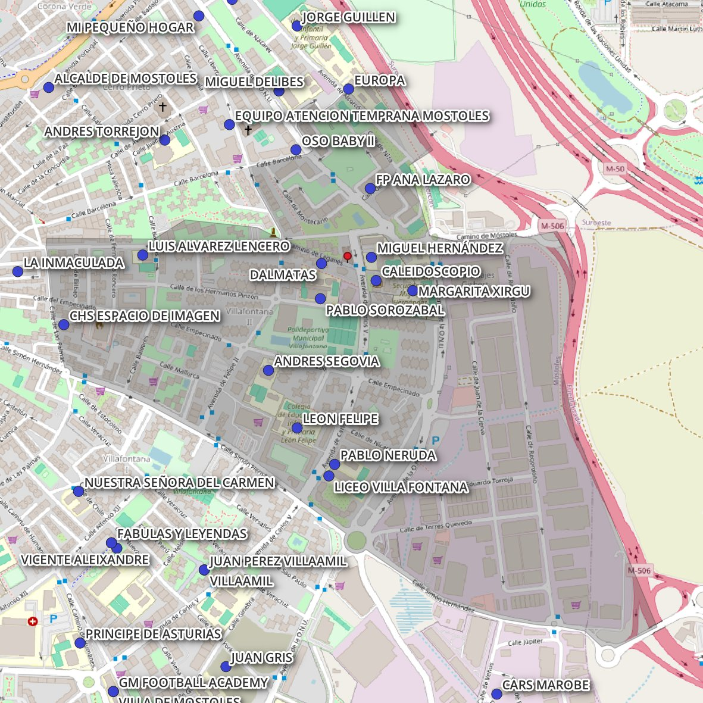

Puntos de interés en el territorio parroquial
Parroquia Santa María de la Alegría (Móstoles) · Arciprestazgo de Móstoles
Entidades religiosas no católicas

8 entidades religiosas no católicas en el territorio de la parroquia.
Evangélicos (5)
- All Nations Ministry (Ministerio de Todas las Naciones)Calle Empecinado 32 Local A, Móstoles
- Brooks Christian Center (Centro Cristiano Los Arroyos)Calle Torres Quevedo 16, Móstoles
- Iglesia Evangélica de Hermanos en CarabanchelCalle Pinzón 16, Madrid
- Iglesia Evangélica de MóstolesCalle de la ONU 22, Móstoles
- Misión de la Iglesia Presbiteriana LibreCalle Montecarlo 5, Móstoles
Ortodoxos (2)
- Iglesia Apostólica Armenia de EspañaCalle de los Hermanos Pinzón 10 6ºC, Móstoles
- Parroquia Ortodoxa Rumana Los Santos Rumanos, de MóstolesCalle del Empecinado 35 Piso 8, Puerta B, Móstoles
Testigos de Jehová (1)
- Salón del Reino de los Testigos Cristianos de JehováCalle de Montecarlo 3 Semisótano 1 (acceso por la parte lateral derecha), Móstoles
Fuente: Registro de Entidades Religiosas del Ministerio de la Presidencia, Justicia y Relaciones con las Cortes. Situación en el mapa: dirección geocodificada con CartoCiudad (IGN) o Nominatim (OpenStreetMap).
Centros educativos

11 centros educativos en el territorio de la parroquia (público: 8, privado: 3).
| Centro | Tipo | Titularidad | Domicilio | Web |
|---|---|---|---|---|
| ANDRES SEGOVIA | Colegio de educación infantil y primaria | Público | Calle Empecinado, 60, 28936 Móstoles | Página web |
| CALEIDOSCOPIO | Escuela infantil | Público | Avenida de Carlos V, 3, 28936 Móstoles | Página web |
| CHS ESPACIO DE IMAGEN | Centro docente extranjero en España | Privado | Calle de las Palmas, 9, 28937 Móstoles | |
| DALMATAS | Escuela infantil privada | Privado | Calle Camino de Leganés, 50, 28936 Móstoles | Página web |
| LEON FELIPE | Colegio de educación infantil y primaria | Público | Avenida de Carlos V, 28, 28936 Móstoles | Página web |
| LICEO VILLA FONTANA | Centro privado de educación infantil, primaria y secundaria | Privado | Avenida de Carlos V, 27, 28936 Móstoles | Página web |
| LUIS ALVAREZ LENCERO | Colegio de educación infantil y primaria | Público | Calle Camino de Leganés, 18, 28931 Móstoles | Página web |
| MARGARITA XIRGU | Colegio de educación infantil y primaria | Público | Avenida de la O.N.U., 26, 28936 Móstoles | Página web |
| MIGUEL HERNÁNDEZ | Instituto de educación secundaria | Público | Avenida de Carlos V, 1, 28936 Móstoles | Página web |
| PABLO NERUDA | Unidad de formación e inserción laboral | Público | Avenida de Carlos V, 25, 28936 Móstoles | Página web |
| PABLO SOROZABAL | Colegio de educación infantil y primaria | Público | Calle de los Hermanos Pinzón, 21, 28936 Móstoles | Página web |
Fuente: registro de centros educativos de la Comunidad de Madrid. Solo se recogen los centros de alta.